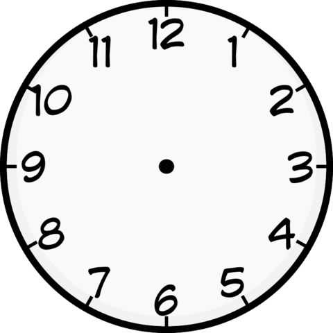

<ion-header padding>
  <ion-toolbar>
    <ion-buttons slot="start">
      <ion-back-button defaultHref="/"></ion-back-button>
    </ion-buttons>
    <ion-title>World Clock</ion-title>
    <ion-buttons slot="end">
      <ion-button routerLink="/clock-search">
        <ion-icon name="add-circle-outline"></ion-icon>
      </ion-button>
    </ion-buttons>
  </ion-toolbar>
</ion-header>
<ion-content fullscreen>
  <div class="clock"> 
    <div class="analog-clock">
      <div class="hour hand" [ngStyle]="hourHandStyle"></div>
      <div class="minute hand" [ngStyle]="minuteHandStyle"></div>
      <div class="second hand" [ngStyle]="secondHandStyle"></div>
      <div class="center-circle"></div>
      
    </div>
    <div class="zone">
      <h4>{{timezone}} <br>(GMT {{offset}}) <br> {{defaultDateTime | date: 'EEEE'}}</h4>
    </div>
  </div>
    <ion-card *ngFor="let data of latestData; let i=index" padding>
      <ion-card-header>
        <ion-card-title>{{latestTime[i]}}</ion-card-title>
        <ion-card-subtitle>{{data.timezone}} <br>(GMT {{data.utc_offset}}) <br>{{ data.datetime | date: 'EEEE'}}</ion-card-subtitle>
        <ion-icon name="trash-bin-outline" class="trashIcon" (click)="removeIt(i)"></ion-icon>
      </ion-card-header>
    </ion-card>
    
  
</ion-content>

